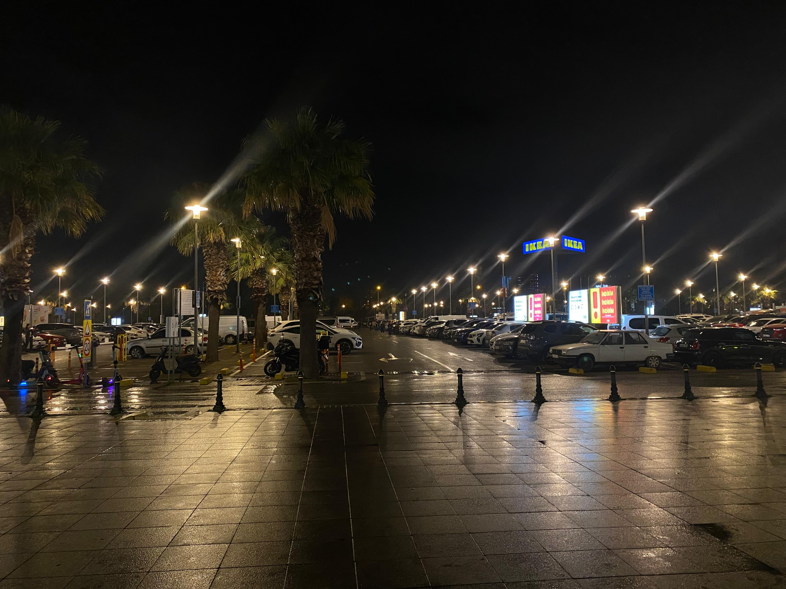

Welcome to my sightseeing page! Taking picture is one of my biggest hobbies so this page is about some of the beautiful places I have visited and the memories I captured there. I enjoy traveling and exploring different cities, cultures, and landscapes. Some of the places featured here include Baku, Izmir, and Antalya. Baku is a city that combines modern architecture with rich history and culture. Izmir is known for its relaxing atmosphere and beautiful views by the sea. Antalya is famous for its sunny beaches, nature, and amazing sightseeing spots. Through these photos, I want to share the beauty of these cities and the experiences I had while visiting them. Traveling allows me to learn about different cultures and see the world from new perspectives. I hope you enjoy exploring these places through my pictures.